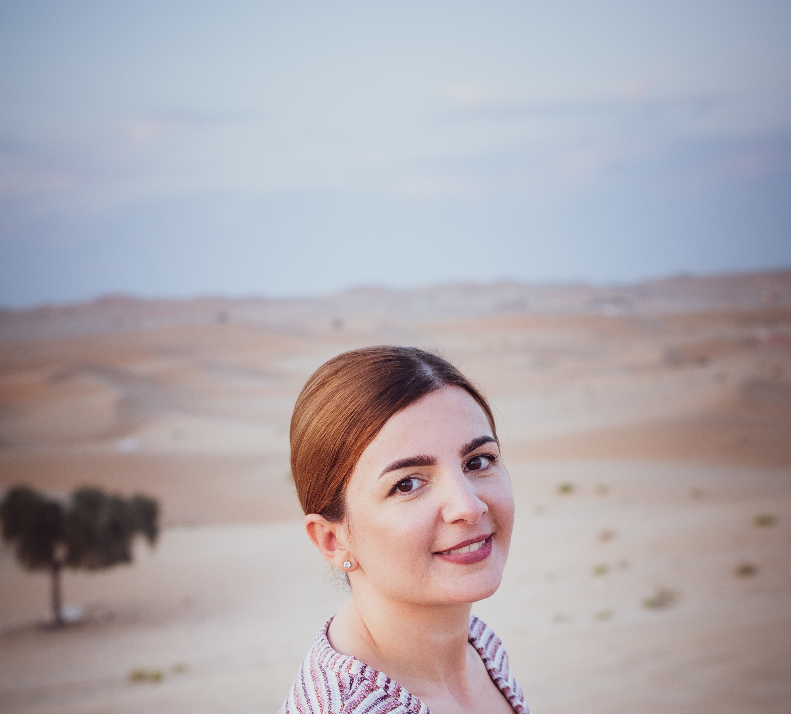

Andreea Boticiu

Education
- Batchelor degree in Psychology ,West University(2009-2012)
Work experience
- Adds Quality Rater,Welocalize
January 2023-present
- Assess the quality and relevance of online advertisements
- Evaluating search engine ads and determining their effectiveness in meeting user search queries
- Analizing text, web pages, images, and other types of information
- Cabin crew,Etihad Airways
June 2013-November 2022
- Performing safety and security checks on board the aircraft
- Ensuring all safety protocols are followed by passengers while in the aircraft
- Communicate effective with supervisors, colleagues and captains
- Administer first aid
- Team Assistant,StarInnovate Media
June 2011-May 2013
- Recruting promoters and merchandisers for different projects
- Support the team with all the information and materials in order to
have the best results
- Receiving feedback and sales reports from the team
- Managing the projects budget in order to get 100% efficiency
Digital skills
- Ms Office
- CSS
- HTML
- JavaScript
Communication and Interpersonal skills
- Effective and clear communication developed from
working in a multicultural work environment
- Conflict management skills
- Flexibility in thinking and always open to new ideas
when it comes to problem solving
- Great team work and team spirit
Organisational Skills
- Good at working under pressure and respecting
deadlines
- Attention to detail
- Good time management when it comes to complete
tasks
Certifications
- HR manager certification
- Introduction to Web Development,University of California(coursera)
Contact Me